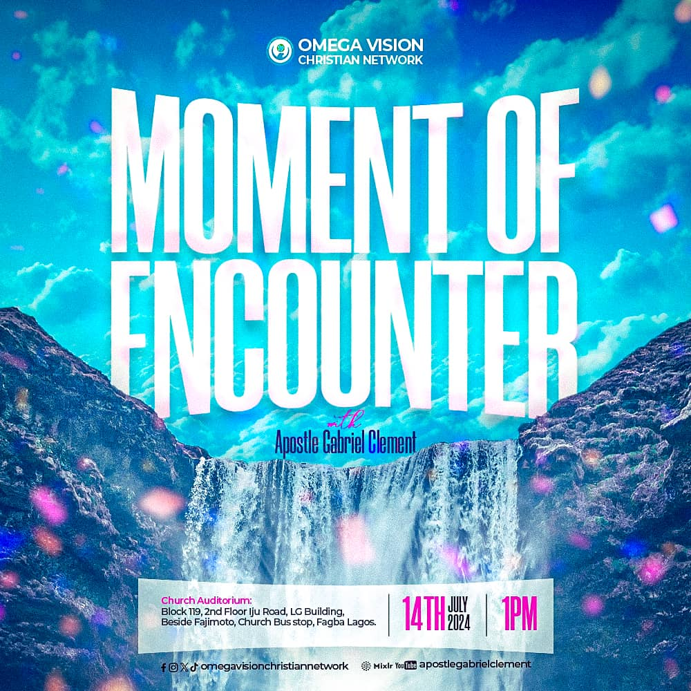

The "Fresh Fire Conference" is an annual 3-day spiritual gathering designed to rekindle the flames of divine passion in the hearts of believers. This transformative event is held to place a demand for more of God's fire, enabling us to keep burning brightly for Him, regardless of the circumstances we face.
In a world filled with distractions and challenges, the Fresh Fire Conference serves as a beacon for those seeking to renew their spiritual fervor and deepen their relationship with God. Drawing inspiration from the words of Jesus in Luke 12:49, "I have come to bring fire on the earth, and how I wish it were already kindled!", we gather to fan the flames of our faith and embrace the consuming fire of God.
Each day of the conference features powerful teachings from a diverse array of ministers of God, each bringing a unique dimension of God's revelation. These anointed speakers are chosen for their deep understanding of Scripture and their ability to convey profound spiritual truths. Through their teachings, attendees are exposed to new insights and fresh perspectives that open their hearts and minds to a greater understanding of who God is.
The first day of the Fresh Fire Conference focuses on reigniting the flame within. Through intense worship and fervent prayer, we invite the Holy Spirit to move freely among us, setting our hearts ablaze. The minister of the day delivers a powerful message on the importance of maintaining spiritual fervor, drawing from passages such as 2 Timothy 1:6, "For this reason, I remind you to fan into flame the gift of God, which is in you through the laying on of my hands."
On the second day, the conference shifts focus to empowerment for service. We believe that the fire of God is not just for personal edification but for the advancement of His kingdom. The day's teaching emphasizes the necessity of being filled with the Holy Spirit to serve effectively in various capacities. Acts 1:8 serves as the foundation: "But you will receive power when the Holy Spirit comes on you; and you will be my witnesses in Jerusalem, and in all Judea and Samaria, and to the ends of the earth."
The final day is dedicated to sustaining the fire. We explore practical steps and spiritual disciplines that help believers maintain their spiritual fervor long after the conference ends. The minister's message, grounded in Romans 12:11, "Never be lacking in zeal, but keep your spiritual fervor, serving the Lord," equips attendees with the tools they need to keep the fire burning in their daily lives.
The Fresh Fire Conference is more than a series of meetings; it is a journey of transformation. Each session is designed to lead participants deeper into God's presence, where they can experience personal renewal and corporate revival. Through worship, prayer, and the Word, we create an environment where the Holy Spirit can move powerfully, bringing healing, deliverance, and empowerment.
While the conference includes rich teachings, it is prayer that forms its heartbeat. We dedicate significant time to corporate and individual prayer, believing that it is through prayer that we draw closer to God and receive His fire. Ephesians 6:18 reminds us, "And pray in the Spirit on all occasions with all kinds of prayers and requests. With this in mind, be alert and always keep on praying for all the Lord’s people."
We invite you to join us for the next Fresh Fire Conference and immerse yourself in three days of spiritual renewal. Come with an open heart, ready to receive a fresh outpouring of God's fire. Whether you are a seasoned believer or new to the faith, this conference offers a unique opportunity to deepen your relationship with God and equip yourself for greater service in His kingdom.
The Fresh Fire Conference is not just an event; it is an encounter with the living God. It is a time to rekindle the flames of passion for Jesus, to be empowered for service, and to learn how to sustain the fire of God in your life. We look forward to welcoming you to this life-changing gathering, where you will experience the power of God's presence and be transformed by His Word. Remember, it’s not just about seeking fire; it’s about becoming a carrier of God's fire to the world.
Join us at the Fresh Fire Conference and be part of a generation ignited for God!